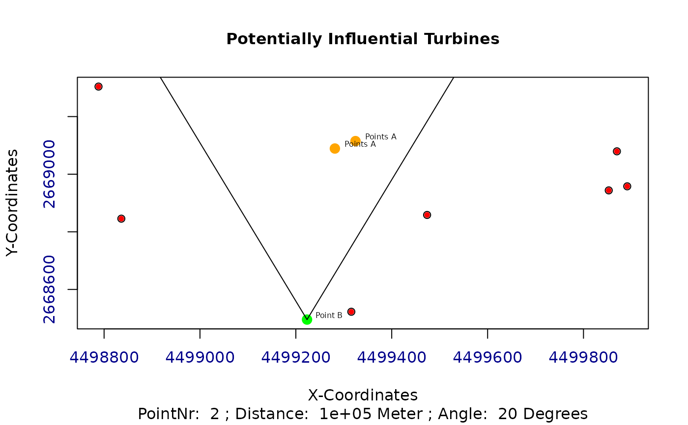
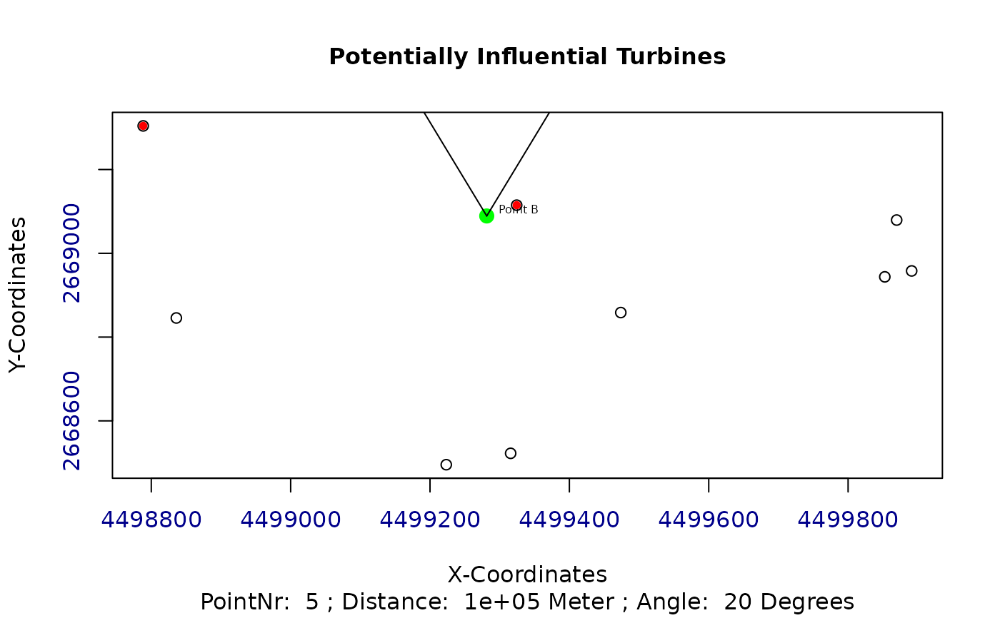
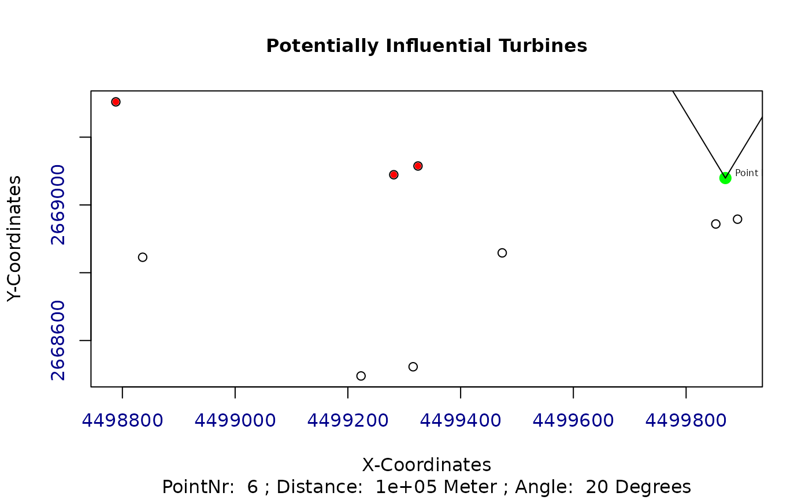

Calculate distances and angles of possibly influencing turbines
get_dist_angles.RdCalculate distances and angles for a turbine and all it's potentially influencing turbines.
get_dist_angles(t, o, wkl, distanz, polYgon, plotAngles)
Arguments
| t | A matrix of the current individual with x and y coordinates |
|---|---|
| o | A numeric value indicating the index of the current turbine |
| wkl | A numeric value indicating the angle, at which no wake influences are considered. Default is 20 degrees. |
| distanz | A numeric value indicating the distance, after which the wake effects are considered to be eliminated. Default is 100km. |
| polYgon | A shapefile representing the considered area |
| plotAngles | A logical variable, which is used to plot the distances and angles. Default is FALSE |
Value
Returns a matrix with the distances and angles of potentially influencing turbines
See also
Other Wind Energy Calculation Functions: barometric_height,
calculate_energy,
turbine_influences
Examples
library(sp) library(raster) ## Exemplary input Polygon with 2km x 2km: polYgon <- Polygon(rbind(c(0, 0), c(0, 2000), c(2000, 2000), c(2000, 0))) polYgon <- Polygons(list(polYgon),1) polYgon <- SpatialPolygons(list(polYgon)) Projection <- "+proj=laea +lat_0=52 +lon_0=10 +x_0=4321000 +y_0=3210000 +ellps=GRS80 +towgs84=0,0,0,0,0,0,0 +units=m +no_defs" proj4string(polYgon) <- CRS(Projection); plot(polYgon, axes = TRUE)## Create a random windfarm with 10 turbines t <- as.matrix(cbind(x = runif(10, 0, raster::extent(polYgon)[2]), y = runif(10, 0, raster::extent(polYgon)[4]))) wnkl <- 20 distanz <- 100000 ## Evaluate and plot for every turbine all other potentially influencing turbines potInfTur <- list() for (i in 1:(length(t[,1]))) { potInfTur[[i]] <- get_dist_angles(t = t, o = i, wkl = wnkl, distanz = distanz, polYgon = polYgon, plotAngles = TRUE) }potInfTur#> [[1]] #> Ax Ay Bx By Cx Cy Laenge_C Laenge_B #> [1,] 644.7478 1976.477 946.6969 1028.506 644.7478 1028.506 994.8987 947.9716 #> [2,] 938.7681 1415.687 946.6969 1028.506 938.7681 1028.506 387.2626 387.1814 #> Laenge_A alpha betha gamma #> [1,] 301.949158 17.667787 72.33221 90 #> [2,] 7.928833 1.173158 88.82684 90 #> #> [[2]] #> Ax Ay Bx By Cx Cy Laenge_C Laenge_B Laenge_A alpha betha gamma #> [1,] 0 0 644.7478 1976.477 0 0 0 0 0 0 0 0 #> #> [[3]] #> Ax Ay Bx By Cx Cy Laenge_C Laenge_B Laenge_A alpha betha gamma #> [1,] 0 0 175.996 1268.794 0 0 0 0 0 0 0 0 #> #> [[4]] #> Ax Ay Bx By Cx Cy Laenge_C #> [1,] 946.6969 1028.5056 1033.681 486.5259 946.6969 486.5259 548.9155 #> [2,] 644.7478 1976.4771 1033.681 486.5259 644.7478 486.5259 1539.8779 #> [3,] 1115.1430 974.6286 1033.681 486.5259 1115.1430 486.5259 494.8538 #> [4,] 938.7681 1415.6870 1033.681 486.5259 938.7681 486.5259 933.9962 #> Laenge_B Laenge_A alpha betha gamma #> [1,] 541.9797 86.98456 9.117876 80.88212 90 #> [2,] 1489.9512 388.93372 14.629902 75.37010 90 #> [3,] 488.1027 81.46143 9.475006 80.52499 90 #> [4,] 929.1611 94.91339 5.832506 84.16750 90 #> #> [[5]] #> Ax Ay Bx By Cx Cy Laenge_C Laenge_B #> [1,] 946.6969 1028.506 658.6735 98.19695 946.6969 98.19695 973.8746 930.3087 #> [2,] 644.7478 1976.477 658.6735 98.19695 644.7478 98.19695 1878.3319 1878.2803 #> [3,] 383.7154 904.790 658.6735 98.19695 383.7154 98.19695 852.1703 806.5931 #> [4,] 454.7949 1498.592 658.6735 98.19695 454.7949 98.19695 1415.1581 1400.3949 #> [5,] 938.7681 1415.687 658.6735 98.19695 938.7681 98.19695 1346.9347 1317.4901 #> Laenge_A alpha betha gamma #> [1,] 288.02344 17.2025160 72.79748 90 #> [2,] 13.92572 0.4247882 89.57521 90 #> [3,] 274.95810 18.8236408 71.17636 90 #> [4,] 203.87866 8.2833003 81.71670 90 #> [5,] 280.09460 12.0022232 77.99778 90 #> #> [[6]] #> Ax Ay Bx By Cx Cy Laenge_C Laenge_B #> [1,] 644.7478 1976.477 383.7154 904.79 644.7478 904.79 1103.0192 1071.6871 #> [2,] 454.7949 1498.592 383.7154 904.79 454.7949 904.79 598.0408 593.8018 #> Laenge_A alpha betha gamma #> [1,] 261.03238 13.689060 76.31094 90 #> [2,] 71.07944 6.825957 83.17404 90 #> #> [[7]] #> Ax Ay Bx By Cx Cy Laenge_C Laenge_B #> [1,] 644.7478 1976.477 265.7935 374.7446 644.7478 374.7446 1645.9508 1601.7327 #> [2,] 175.9960 1268.794 265.7935 374.7446 175.9960 374.7446 898.5474 894.0491 #> [3,] 383.7154 904.790 265.7935 374.7446 383.7154 374.7446 543.0044 530.0455 #> [4,] 454.7949 1498.592 265.7935 374.7446 454.7949 374.7446 1139.6289 1123.8472 #> Laenge_A alpha betha gamma #> [1,] 378.95428 13.310866 76.68913 90 #> [2,] 89.79752 5.735504 84.26450 90 #> [3,] 117.92191 12.542613 77.45739 90 #> [4,] 189.00134 9.546304 80.45370 90 #> #> [[8]] #> Ax Ay Bx By Cx Cy Laenge_C Laenge_B Laenge_A alpha betha gamma #> [1,] 0 0 1115.143 974.6286 0 0 0 0 0 0 0 0 #> #> [[9]] #> Ax Ay Bx By Cx Cy Laenge_C Laenge_B Laenge_A alpha betha gamma #> [1,] 0 0 454.7949 1498.592 0 0 0 0 0 0 0 0 #> #> [[10]] #> Ax Ay Bx By Cx Cy Laenge_C Laenge_B Laenge_A alpha betha gamma #> [1,] 0 0 938.7681 1415.687 0 0 0 0 0 0 0 0 #>